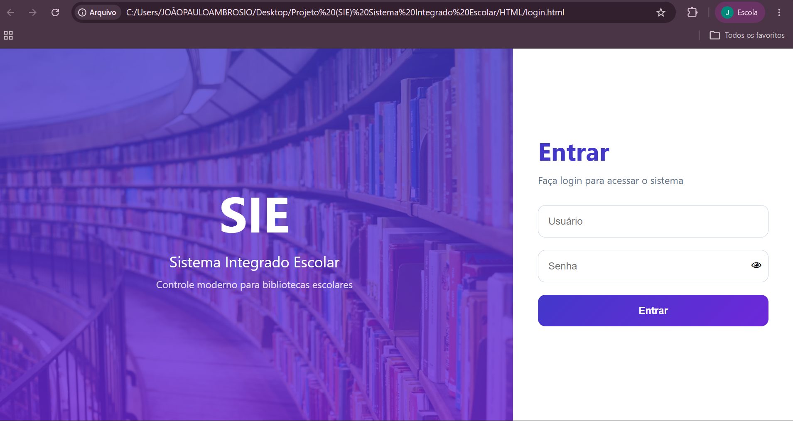

SIE
Sistema Integrado Escolar
Plataforma digital voltada para o gerenciamento de bibliotecas escolares. O sistema viabiliza o controle de empréstimos e devoluções de livros de forma online, otimizando a organização e o acesso à informação dentro das instituições de ensino.
Integrantes do Grupo:
- Tiago Rodrigo F. Oliveira
- João Paulo Ambrósio
- David Thiago O. da Silva
- André Emanuel S. Rocha

School Game
Jogo Educativo
Ambiente virtual interativo desenvolvido para auxiliar o aprendizado de forma dinâmica. O estudante controla um personagem que explora a escola, interage com professores e sana dúvidas sobre diversas matérias, unindo tecnologia, educação e entretenimento.
Integrantes do Grupo:
- Ana Clara C. Furlan
- Larissa Sofia S. da Silva
- Letycia V. S. Campos
- Nathalya Gabriely S. Silva
- Jorge Luiz Toledo Neto
- Sthefany Vitória L. Cruz
Controle de Ocorrências
Gestão Escolar
Solução desenvolvida para otimizar e organizar o registro de problemas, ocorrências e reclamações no ambiente corporativo ou escolar. O sistema simplifica a comunicação de incidentes, beneficiando funcionários e a equipe gestora na resolução ágil de demandas.
Integrantes do Grupo:
- Lucas Aparecido F. Oliveira
- Diogo José Bolzam
- Nicolly Carolyne S. Lopes
- Pedro Henrico Rui
- Pedro Henrique L. Tannouri
- Matheus Henrique S. Sesso
Título a Definir
Escopo do Projeto
Os detalhes operacionais, objetivos e repositórios desta equipe acadêmica serão atualizados assim que definidos pelo grupo.
Integrantes do Grupo:
- Bárbara E. G. Cypriano
- Maria Isabela R. Oliveira
- Sarah de Oliveira Vieira
- Cecília Vitória M. Nunes
- Marco Antônio C. Reis
- Luiz Guilherme Massano